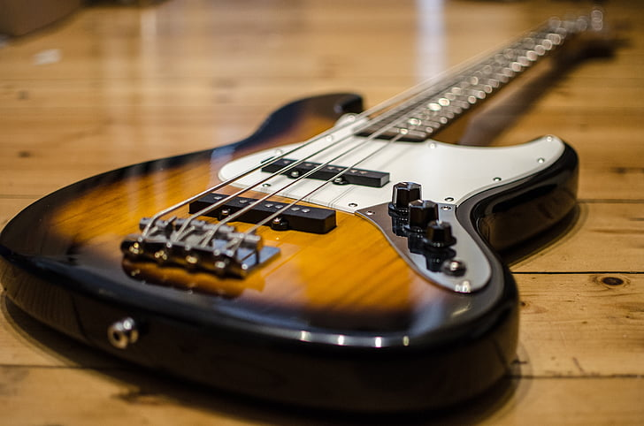

There are three types of guitars.
The bass guitar is a guitar that plays very deep notes.This guitar is used to make a background noise, or a low set of chords, an important element to making a catchy song.
The electric guitar is a guitar that makes electric sounds that are satisfying to the human ear. This guitar is very often used because of the sounds it makes, that can greatly boost a song's overall energy. This guitar works very well with drums.
The acoustic guitar is often used to make a country sounding song. It can work well with a bass to make a good background noise.
Photo by unknown from Pickpik
photo by unknown from Pickpik
Photo by Ktostam 25 on Deviantart